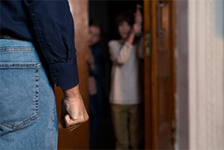

You have the right to be free from harm and abuse. Below, you will find information about different kinds of abuse and their warning signs. If you ever notice these signs in yourself or in others, it is important to report it so that we can help.

Physical abuse
Physical abuse is when someone hurts you by doing things like hitting, slapping or shaking you, or causing you pain, such as pulling your hair or ears, biting, or using physical punishment. Harmful traditional practices that hurt someone’s body, such as female genital mutilation, are also not allowed.
Read more
- Many or unexplained injuries A young person has many injuries, especially if they can’t explain how they happened or give unusual excuses such as “I accidentally ran into a door”.
- Avoiding physical contact Someone who used to be comfortable with things like hugs or high-fives now pulls away, doesn’t want them, or is very jumpy when touched.
- Always wearing lots of clothes Someone wears a lot of clothes all the time, even on very hot days or at the beach. This might be a sign that they are trying to hide bruises or marks on their body.
Emotional abuse
Emotional abuse is when someone uses mean behaviour, words or actions to hurt your feelings. This includes bullying, being scary or threatening, making fun of you, or making you feel really bad about yourself.
Read more
- Withdrawal Someone becomes more isolated, avoids social situations, or doesn’t want to spend as much time with friends and family.
- Personality changes A young person becomes very quiet, sad or anxious, and their personality changes noticeably.
- Low self-esteem Someone starts to feel they are not good enough, has no confidence, or constantly puts themselves down.
Sexual abuse
Sexual abuse means someone does things that make you uncomfortable or scared in a sexual way without your voluntary agreement.
Read more
Non-physical: This includes harassment, such as repeatedly bothering you with unwanted advances or making comments of a sexual nature. It can also involve showing you inappropriate pictures or pressuring you into doing things you are not comfortable with.
Physical: This involves physical actions, such as touching your intimate areas or sexual activities, without your clear and voluntary consent. It can also happen when you are unable to give consent, for example because of alcohol or drugs. Remember, it is never acceptable for anyone to do these things without your agreement.
- Emotional distress A young person shows strong emotional reactions, such as fear, anger or withdrawal.
- Sexual knowledge beyond their age A young person knows or talks about sexual topics that are not appropriate for their age.
- Fear of specific people or places A young person develops an unexplained fear of certain people or places, or avoids them.
- Physical symptoms Physical symptoms such as pain, discomfort or bleeding in the genital area.
Financial abuse
Financial abuse is when someone takes your money or belongings without your consent, or makes you feel guilty or bad about how you manage your money.
Read more
- Unexplained financial changes A young person’s financial situation suddenly changes, and they can’t or won’t explain why.
- Lack of control over money They have no control over their own money – for example, they are not allowed to access their bank account, or they have to hand over their income or pocket money.
- Criticism and guilt-tripping Someone keeps telling you that your money choices are wrong and makes you feel bad about them – for example, always calling you irresponsible for spending money on things that are within your budget.
Neglect is when someone who is supposed to take care of you does not provide the things you need, such as food, a safe place to live, or love and attention.
Read more
- Constant hunger A young person is often very hungry, eats a lot when food is available, or hides food.
- Inadequate clothing They have dirty or torn clothes, or wear clothes that are not suitable for the weather – for example, only a T-shirt in winter.
- Lack of supervision A young person is left alone for a long time without any adult looking after them.
Violations of privacy
A violation of privacy is when your personal space and belongings are not respected.
Read more
- Lack of privacy A young person can’t have personal space or close their bedroom or bathroom door, or there are cameras recording them.
- Unauthorised sharing Someone shares a young person’s private information or photos without asking them first.